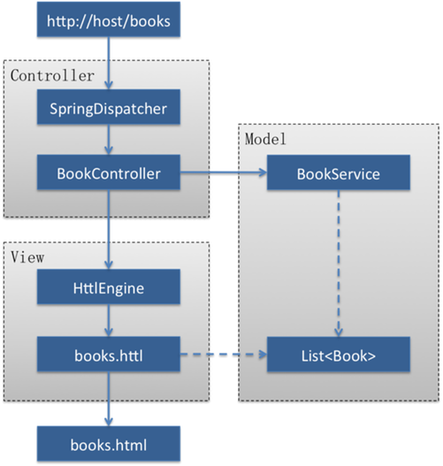

<! Doctype html>
<!-- [If lt IE 7]><html class="no-js ie6 oldie" lang="en"><! [Endif]-->
<!-- [If IE 7]><html class="no-js ie7 oldie" lang="en"><! [Endif]-->
<!-- [If IE 8]><html class="no-js ie8 oldie" lang="en"><! [Endif]-->
<!-- [If gt IE 8]><html class="no-js ieg8" lang="en"><! [Endif]-->
<html>
<head>
<meta charset="utf-8">
<title>HTTL - open source Java template engine</title>
<meta name="viewport" content="width=device-width, initial-scale=1, maximum-scale=1">
<link rel="apple-touch-icon" href="../img/apple-touch-icon.png"/>
<link rel="shortcut icon" href="favicon.ico" />
<link rel="stylesheet" type="text/css" href="http://fonts.googleapis.com/css?family=Lato:400,700" />
<link rel="stylesheet" type="text/css" href="../css/style.css" />
<link rel="stylesheet" type="text/css" href="../css/style-mobile.css" media="only screen and (max-width: 480px)" />
<link rel="stylesheet" type="text/css" href="../css/httl.css" />
<link rel="stylesheet" type="text/css" href="../css/httl-mobile.css" media="only screen and (max-width: 480px)" />
<link rel="stylesheet" type="text/css" href="../css/shCoreDefault.css" />
<script type="text/javascript" src="../js/modernizr-2.0.6.min.js"></script>
<script type="text/javascript" src="../js/jquery-1.6.2.min.js"></script>
<script type="text/javascript" src="../js/httl.js"></script>
<script type="text/javascript" src="../js/shCore.js"></script>
<script type="text/javascript" src="../js/shBrushXml.js"></script>
<script type="text/javascript" src="../js/shBrushJava.js"></script>
<script type="text/javascript">SyntaxHighlighter.all ();</script>
</head>
<body class="home">
    <a href="http://github.com/httl/httl"></a>
    <div class="container">
        <header>
            <div class="logo">
				<a href="./">HTTL</a>
            </div>
            <div id="headline" class="headline">
                <ul>
                  <li>simple&friendly</li>
                  <li>high-performance</li>
                  <li>high-quality</li>
                </ul>
            </div>
        </header>
        <nav class="primary-nav">
            <a href="./">Overview</a>
            <a href="download.html">download</a>
            <a href="example.html">sample</a>
            <a href="syntax.html">syntax</a>
            <a href="config.html">configuration</a>
            <a href="integration.html">integration</a>
            <a href="design.html">design</a>
            <a href="help.html">help</a>
        </nav>
    <div class="content">
      <div class="body-content">
        <section>

<h1>integration</h1>

<p>HTTL already onboard popular MVC framework, you may also use the API to integrate HTTL.</p>

<h2>API Integration</h1>

<h3>API List</h3>

<p>Engine: (loaded immutable, thread safety, please multiplexed single case)</p>

<ul>
<li>Engine.getEngine () Gets engine single case</li>
<li>Engine.getTemplate (name) template-based query template instance name</li>
<li>Engine.parseTemplate (src) parsing template source code as a template instance</li>
<li>Engine.getResource (name) Gets the resource file</li>
<li>Engine.hasResource (name) determine resource file exists</li>
<li>Engine.getProperty (key) to get the configuration property values ​​</li>
<li>Engine.getName () to get the configuration file name</li>
<li>Engine.getVersion () Gets HTTL version</li>
</ul>

<p>Template: (inherited from Node and Resource, each template prototype instance, after loading immutable class, thread-safe, heat load will produce different instances)</p>

<ul>
<li>Template.render (map, writer) parameter-based rendering template content to the output</li>
<li>Template.evaluate (map) is evaluated based on the parameter template content</li>
<li>Template.getVariables () to obtain the desired parameter type</li>
<li>Template.getMacros () Gets the template macro</li>
<li>Template.isMacro () whether the current template macro</li>
<li>Node.accept (Visitor) access syntax tree</li>
<li>Node.getOffset () Gets the source location fragment offset</li>
<li>Node.getParent () Gets the parent node</li>
<li>Resource.getInputStream () Gets the template source input stream</li>
<li>Resource.getReader () Gets the template source reader</li>
<li>Resource.getSource () Gets the template source code</li>
<li>Resource.getName () Gets the template source name</li>
<li>Resource.getEncoding () Gets the template source code</li>
<li>Resource.getLastModified () Gets the template source last modified time</li>
<li>Resource.getLocale () Gets the template localized area</li>
<li>Resource.getLength () Gets the template source length</li>
</ul>

<p>Context: (thread-bound instances, the thread stack non-competitive use, thread safety, please do not cross-thread passes)</p>

<ul>
<li>Context.getContext () Gets the current thread context</li>
<li>Context.getParent () Gets the previous one context</li>
<li>Context.getSuper () Gets the previous one template</li>
<li>Context.getTemplate () Gets the currently executing template</li>
<li>Context.getEngine () Gets the current execution engine</li>
<li>Context.getOut () Get the current output</li>
<li>Context.getLevel () Gets the current context level</li>
<li>Context.get (String) Gets the context variable</li>
<li>Context.put (String, Object) written context variable</li>
</ul>

<h3>API integration example</h3>

<pre class="brush: java;">
import httl. *;
import java.util. *;

Map<String, Object>parameters = new HashMap<String, Object>();
parameters.put ("user", user);
parameters.put ("books", books);

Engine engine = Engine.getEngine ();
Template template = engine.getTemplate ("/ books.httl");
template.render (parameters, response.getOutputStream ());
</pre>

<p>Note: the default configuration, HTTL not rely on any party libraries, just JDK1.5 + can.</p>

<p>Note: The default JDK must be used to run, if only the JRE, configured as JavassistCompiler.</p>

<p>following call is a demonstration that you can get to the integration of information:</p>

<pre class="brush: java;">
/ / You can pass Template object, called directly in the template: $! {Template}
/ / Note: HTTL Template object is found, it will pass down directly to the output, instead of copying the results.
parameters.put ("template", template);

/ / Render to the output based on the parameter:
/ / Parameters can be Map, or Pojo object, or Object [], or JSON string.
/ / Out can be OutputStream or Writer.
template.render (parameters, out);

/ / You can also execute the template to get the rendering results:
String result = (String) template.evaluate (parameters);
/ / NOTE: If you just to pass the results of the A template template B, please do not use this first evaluation, re-transmission variable approach.
/ / Because this will waste time memory copy, please direct incoming template, you can reduce the memory footprint of intermediate variables result.
parameters.put ("template", result); / / wrong usage, should be directly passed template object

/ / You can get the template set assignment:
/ / Note: If you want to get in after completing the template rendering variables, use # set (title:="foo") wrote the Context superiors.
/ / Because the template when finished will pop Context rendering stack template Context variables will be gone, and only wrote superiors Context variables retained.
String title = (String) Context.getContext (). Get ("title");

/ / You can also get a template macro: (you can be understood as the macro fragment template)
Template macro = template.getMacros (). Get ("menus");

/ / If you want to write test tools, you can get the necessary variables to the template and type of data to Mock.
Map<String, Class<? >>Variables = template.getVariables ();
</pre>

<h3>ScriptEngine integration</h3>

<p>You can also use the JDK standard script API, so you can not explicitly rely HTTL any class:</p>

<pre class="brush: java;">
import javax.script. *

ScriptEngineManager manager = new ScriptEngineManager ();
ScriptEngine engine = manager.getEngineByName ("httl");

Bindings bindings = engine.createBindings ();
bindings.put ("hello","world");

CompiledScript script = engine.compile ("$ {hello}");
String result = (String) script.eval (bindings);
</pre>

<p>configuration pom.xml dependency:</p>

<pre class="brush: xml;">
<project>
    <dependencies>
        <dependency>
            <groupId>httl</groupId>
            <artifactId>httl-script</artifactId>
            <version>1.0.10</version>
            </dependency>
    </dependencies>
    <repositories>
        <repository>
            <id>httl-repository</id>
            <name>Httl Repository</name>
            <url>http://httl.github.io/maven</url>
        </repository>
    </repositories>
<project>
</pre>

<h2>Extended integration</h2>

<h3>configuration injection</h3>

<pre class="brush: java;">
public MyFilter implements Filter {

private String outputEncoding;

/ / Will be injected httl.properties in output.encoding = UTF-8 configuration items
public void setOutputEncoding (String outputEncoding) {
this.outputEncoding = outputEncoding;
}

private Compiler compiler;

/ / The compiler will inject httl.properties configuration items
/ / And will instantiate and initialize the properties of a good compiler
public void setCompiler (Compiler compiler) {
this.compiler = compiler;
}

private Engine engine;

/ / Will be injected Engine itself
public void setEngine (Engine engine) {
this.engine = engine;
}

/ / When the property injection after execution
public void init () {
}

public String filter (String value) {
/ / ...
}

}
</pre>

<h3>support extension points</h3>

<pre class="brush: java;"># method extends
import.methods = StaticMethodClass

# Template loader
loaders = httl.spi.Loader

# Template parser
template.parser = httl.spi.Parser

# Expression parser
expression.parser = httl.spi.Parser

# Template compilation converter
translator = httl.spi.Translator

# JAVA compiler
compiler = httl.spi.Compiler

# Log output
loggers = httl.spi.Logger

# Attribute decision making unit
resolvers = httl.spi.Resolver

# Template cache
template.cache = java.util.Map

# Render parameters of the converter, the return value must be a Map
map.converters = httl.spi.Converter

# Render output converter, the return value must be a Writer or OutputStream
out.converters = httl.spi.Converter

# Interpolation formatter
formatters = httl.spi.Formatter

# Object codec
codecs = httl.spi.Codec

# HTML Dynamic interpolation filter
value.filters = httl.spi.Filter

# HTML static text filter
text.filters = httl.spi.Filter

# Dynamic interpolation position switch
value.filter.switchers = httl.spi.Switcher

# Static text position switch
text.filter.switchers = httl.spi.Switcher

# JS dynamic interpolation filter
script.value.filters = httl.spi.Filter

# JS static text filter
script.text.filters = httl.spi.Filter

# CSS Dynamic interpolation filter
style.value.filters = httl.spi.Filter

# CSS Static text filtering
style.text.filters = httl.spi.Filter
</pre>

<h2>MVC integration</h2>

<p>HTTL in MVC position:</p>

<p></p>

<h3>configured search order</h3>

<p>(1) First, find / WEB-INF/web.xml in the context-param specified configuration:</p>

<pre class="brush: xml;">
<context-param>
    <param-name>httl.properties</param-name>
    <param-value>/ WEB-INF/httl.properties</param-value>
</context-param>
</pre>

<p>(Note: If you configure the path begins with a /, said in a Web application directory, or look under the ClassPath)</p>

<p>(2) If not configured, then find the default WEB-INF path :/ WEB-INF/httl.properties</p>

<p>(3) If there is no WEB-INF, then search ClassPath root directory: httl.properties</p>

<p>(4) If there is no ClassPath root directory, use the standard configuration.</p>

<h3>variable search order</h3>

<p>to $ {foo} as an example:</p>

<p>(1) First, find the current template # set variable assignment.</p>

<p>(2) Find a Business Controller and then return variables.</p>

<p>(3) and then find the requested attributes: request.getAttribute ("foo")</p>

<p>(4) and then look for a request parameter: request.getParameter ("foo")</p>

<p>(5) and then look for the request header: request.getHeader ("foo")</p>

<p>(6) and then look for the temporary session attributes: session.getAttribute ("foo")</p>

<p>(7) and then look for a wild session attributes: cookie.get ("foo")</p>

<p>(8) and then find the application properties: servletContext.getAttribute ("foo")</p>

You can also specify access<p>domain:</p>

<p>(1) $ {request.foo} returns the requested attributes: request.getAttribute ("foo")</p>

<p>(2) $ {parameter.foo} return request parameters: request.getParameter ("foo")</p>

<p>(3) $ {header.foo} return request header: request.getHeader ("foo")</p>

<p>(4) $ {session.foo} return temporary session attributes: session.getAttribute ("foo")</p>

<p>(5) $ {cookie.foo} return persistent session attributes: cookie.get ("foo")</p>

<p>(6) $ {application.foo} return application attributes: servletContext.getAttribute ("foo")</p>

<h3>Servlet integration</h3>

<p>you need in your business Servlet in processing the business, the business parameters are written request.setAttribute () in.</p>

<p>HttlFilter Servlet in business execution, read from the template directory with the same name as the request path suffix replaced. httl template, and then request variables for rendering.</p>

<p>To perform non-dot template, you can forward the request to the specified template, HttlServlet read in the template directory path forward over the same name as the template, and then request variables for rendering.
For example: request.getRequestDispatcher ("foo.httl"). Forward (request, response);</p>

<p>Configuration / WEB-INF/web.xml:</p>

<pre class="brush: xml;">
<? Xml version="1.0" encoding="UTF-8"?>
<Web-app xmlns: xsi="http://www.w3.org/2001/XMLSchema-instance"
xmlns="http://java.sun.com/xml/ns/javaee" xmlns: web="http://java.sun.com/xml/ns/javaee/web-app_2_5.xsd"
xsi: schemaLocation="http://java.sun.com/xml/ns/javaee http://java.sun.com/xml/ns/javaee/web-app_2_5.xsd"
version="2.5">

<servlet>
<servlet-name>yourServlet</servlet-name>
<servlet-class>com.foo.YourServlet</servlet-class>
<load-on-startup>1</load-on-startup>
</servlet>

<servlet-mapping>
<servlet-name>yourServlet</servlet-name>
<url-pattern>*. do</url-pattern>
</servlet-mapping>

<servlet>
<servlet-name>httlServlet</servlet-name>
<servlet-class>httl.web.servlet.HttlServlet</servlet-class>
<load-on-startup>2</load-on-startup>
</servlet>

<servlet-mapping>
<servlet-name>httlServlet</servlet-name>
<url-pattern>*. httl</url-pattern>
</servlet-mapping>

<filter>
<filter-name>httlFilter</filter-name>
<filter-class>httl.web.servlet.HttlFilter</filter-class>
</filter>

<filter-mapping>
<filter-name>httlFilter</filter-name>
<url-pattern>*. do</url-pattern>
</filter-mapping>

</web-app>
</pre>

<p>Configuration / WEB-INF/httl.properties:</p>

<pre class="brush: java;">import.packages + = com.your.domain
template.directory = / WEB-INF/templates
message.basename = / WEB-INF/messages
input.encoding = UTF-8
output.encoding = UTF-8
reloadable = false
precompiled = false
localized = false
</pre>

<p>configuration pom.xml dependency:</p>

<pre class="brush: xml;">
<project>
    <dependencies>
        <dependency>
            <groupId>httl</groupId>
            <artifactId>httl-servlet</artifactId>
            <version>1.0.10</version>
        </dependency>
    </dependencies>
    <repositories>
        <repository>
            <id>httl-repository</id>
            <name>Httl Repository</name>
            <url>http://httl.github.io/maven</url>
        </repository>
    </repositories>
<project>
</pre>

<p>sample source code repository:<a href="https://github.com/httl/httl-demo/tree/master/httl-servlet-demo">httl-servlet-demo</a></p>

<p>sample pack download see:<a href="download.html">download</a></p>

<h3>SpringMVC integration</h3>

<p>Configuration / WEB-INF/web.xml:</p>

<pre class="brush: xml;">
<? Xml version="1.0" encoding="UTF-8"?>
<Web-app xmlns: xsi="http://www.w3.org/2001/XMLSchema-instance"
xmlns="http://java.sun.com/xml/ns/javaee" xmlns: web="http://java.sun.com/xml/ns/javaee/web-app_2_5.xsd"
xsi: schemaLocation="http://java.sun.com/xml/ns/javaee http://java.sun.com/xml/ns/javaee/web-app_2_5.xsd"
version="2.5">

<listener>
<listener-class>org.springframework.web.context.ContextLoaderListener</listener-class>
</listener>

<servlet>
<servlet-name>springmvc</servlet-name>
<servlet-class>org.springframework.web.servlet.DispatcherServlet</servlet-class>
<load-on-startup>1</load-on-startup>
</servlet>

<servlet-mapping>
<servlet-name>springmvc</servlet-name>
<url-pattern>/ *</url-pattern>
</servlet-mapping>

</web-app>
</pre>

<p>Configuration / WEB-INF/springmvc-servlet.xml:</p>

<pre class="brush: xml;">
<? Xml version="1.0" encoding="UTF-8"?>
<! DOCTYPE beans PUBLIC"- / / SPRING / / DTD BEAN 2.0 / / EN"
    "Http://www.springframework.org/dtd/spring-beans-2.0.dtd">
<beans>
    <bean id="viewResolver" class="httl.web.springmvc.HttlViewResolver">
        <property name="contentType" value="text/html; charset=UTF-8" />
    </bean>
</beans>
</pre>

<p>configuration pom.xml dependency:</p>

<pre class="brush: xml;">
<project>
    <dependencies>
        <dependency>
            <groupId>httl</groupId>
            <artifactId>httl-springmvc</artifactId>
            <version>1.0.10</version>
        </dependency>
    </dependencies>
    <repositories>
        <repository>
            <id>httl-repository</id>
            <name>Httl Repository</name>
            <url>http://httl.github.io/maven</url>
        </repository>
    </repositories>
<project>
</pre>

<p>sample source code repository:<a href="https://github.com/httl/httl-demo/tree/master/httl-springmvc-demo">httl-springmvc-demo</a></p>

<p>sample pack download see:<a href="download.html">download</a></p>

<h3>Struts integration</h3>

<p>Configuration / WEB-INF/web.xml:</p>

<pre class="brush: xml;">
<? Xml version="1.0" encoding="UTF-8"?>
<Web-app xmlns: xsi="http://www.w3.org/2001/XMLSchema-instance"
xmlns="http://java.sun.com/xml/ns/javaee" xmlns: web="http://java.sun.com/xml/ns/javaee/web-app_2_5.xsd"
xsi: schemaLocation="http://java.sun.com/xml/ns/javaee http://java.sun.com/xml/ns/javaee/web-app_2_5.xsd"
version="2.5">

<filter>
<filter-name>struts</filter-name>
<filter-class>org.apache.struts2.dispatcher.FilterDispatcher</filter-class>
</ Filter>

<filter-mapping>
<filter-name>struts</filter-name>
<url-pattern>/ *</url-pattern>
</filter-mapping>

</web-app>
</pre>

<p>configuration classpath: struts.xml:</p>

<pre class="brush: xml;">
<? Xml version="1.0" encoding="UTF-8"?>
<! DOCTYPE struts PUBLIC
    "- / / Apache Software Foundation / / DTD Struts Configuration 2.0 / / EN"
    "Http://struts.apache.org/dtds/struts-2.0.dtd">
<struts>
    <package name="hello" extends="httl-default">
        <action name="helloWorld" class="com.hello.HelloWorld">
            <result type="httl">/ hello_world.httl</result>
</action>
    </package>
</struts>
</pre>

<p>Configuration / WEB-INF/httl.properties:</p>

<pre class="brush: java;">import.packages + = com.your.domain
template.directory = / WEB-INF/templates
message.basename = / WEB-INF/messages
input.encoding = UTF-8
output.encoding = UTF-8
reloadable = false
precompiled = false
localized = false
</pre>

<p>configuration pom.xml dependency:</p>

<pre class="brush: xml;">
<project>
    <dependencies>
        <dependency>
            <groupId>httl</groupId>
            <artifactId>httl-struts</artifactId>
            <version>1.0.10</version>
        </dependency>
    </dependencies>
    <repositories>
        <repository>
            <id>httl-repository</id>
            <name>Httl Repository</name>
            <url>http://httl.github.io/maven</url>
        </repository>
    </repositories>
<project>
</pre>

<p>sample source code repository:<a href="https://github.com/httl/httl-demo/tree/master/httl-struts-demo">httl-struts-demo</a></p>

<p>sample pack download see:<a href="download.html">download</a></p>

<h3>Webx integration</h3>

<p>Configuration / WEB-INF/web.xml:</p>

<pre class="brush: xml;">
<? Xml version="1.0" encoding="UTF-8"?>
<Web-app xmlns: xsi="http://www.w3.org/2001/XMLSchema-instance"
xmlns="http://java.sun.com/xml/ns/javaee" xmlns: web="http://java.sun.com/xml/ns/javaee/web-app_2_5.xsd"
xsi: schemaLocation="http://java.sun.com/xml/ns/javaee http://java.sun.com/xml/ns/javaee/web-app_2_5.xsd"
version="2.5">

<filter>
<filter-name>webx</ filter-name>
<filter-class>com.alibaba.citrus.webx.servlet.WebxFrameworkFilter</ filter-class>
<init-param>
<param-name>excludes</ param-name>
<param-value>*. css, *. js, *. jpg, *. gif, *. png</ param-value>
</init-param>
</ Filter>

<filter-mapping>
<filter-name>webx</ filter-name>
<url-pattern>/ *</url-pattern>
</ Filter-mapping>

</ Web-app>
</pre>

<p>Configuration / WEB-INF/webx.xml:</p>

<pre class="brush: xml;">
<? Xml version="1.0" encoding="UTF-8"?>
 Webx Root Context Configuration.
<Beans: beans xmlns: xsi="http://www.w3.org/2001/XMLSchema-instance"
    xmlns: beans="http://www.springframework.org/schema/beans"
    xmlns: p="http://www.springframework.org/schema/p"
    xmlns: services="http://www.alibaba.com/schema/services"
    xmlns: engines="http://www.alibaba.com/schema/services/template/engines"
    xsi: schemaLocation="http://www.springframework.org/schema/beans http://www.springframework.org/schema/beans/spring-beans.xsd
    http://www.alibaba.com/schema/services http://localhost:8080/schema/services.xsd
        http://www.alibaba.com/schema/services/template/engines http://localhost:8080/schema/services/template/engines.xsd">

<services:template>
        <engines:httl-engine />
</services: template>

</beans: beans>
</pre>

<p>Configuration / WEB-INF/httl.properties:</p>

<pre class="brush: java;">import.packages + = com.your.domain
template.directory = / WEB-INF/templates
message.basename = / WEB-INF/messages
input.encoding = UTF-8
output.encoding = UTF-8
reloadable = false
precompiled = false
localized = false
</pre>

<p>configuration pom.xml dependency:</p>

<pre class="brush: xml;">
<project>
    <dependencies>
        <dependency>
            <groupId>httl</groupId>
            <artifactId>httl-webx</artifactId>
            <version>1.0.10</version>
        </dependency>
    </dependencies>
    <repositories>
        <repository>
            <id>httl-repository</id>
            <name>Httl Repository</name>
            <url>http://httl.github.io/maven</url>
        </repository>
    </repositories>
<project>
</pre>

<div id="docUp" style="position: fixed; right: 80px; bottom: 80px; display: none;"><a href="#" onclick="document.body.scrollTop = 0; return false;" ><br/>Top</a></div>
</section>
</div>

<aside>
<div style="text-align: right; padding-right: 10px;">English |<a href="../zh/integration.html">&#20013;&#25991;</a></div>
<div class="standard-right-nav">
  <p>documentation directory</p>
  <div id="docIndex" class="nav-inner"></div>
</div>
</aside>
 
</div>

    <footer>
      <nav class="footer-secondary-nav">
        <div class="companies">
          <p>Copyright 2011 -<script type="text/javascript">document.write (new Date (). getYear () + 1900);</script>HTTL development team.<br/><br/>this station can be adaptive: mobile phone, tablet, computer, etc..<br/></p>
        </div>
      </nav>
    </footer>
  </div>
</body>
</html>